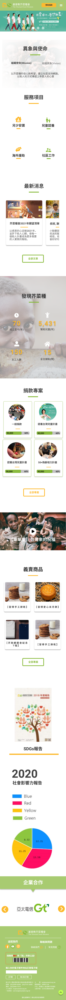
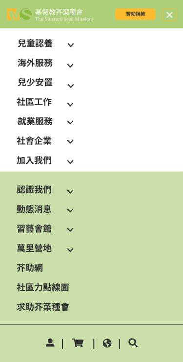
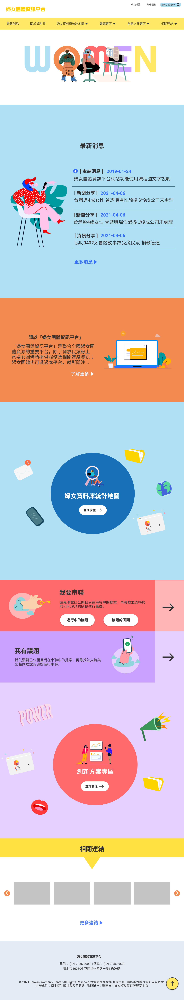
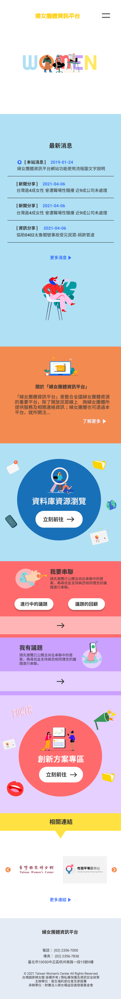
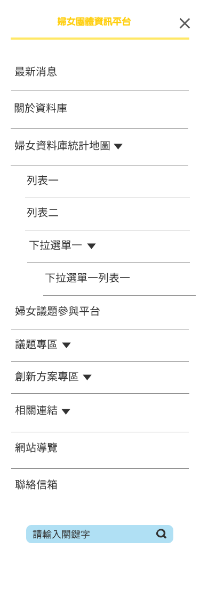
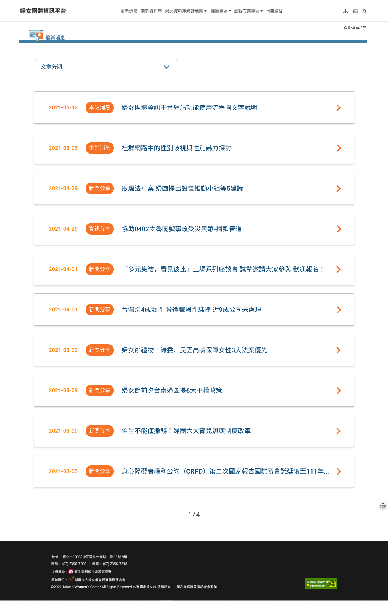
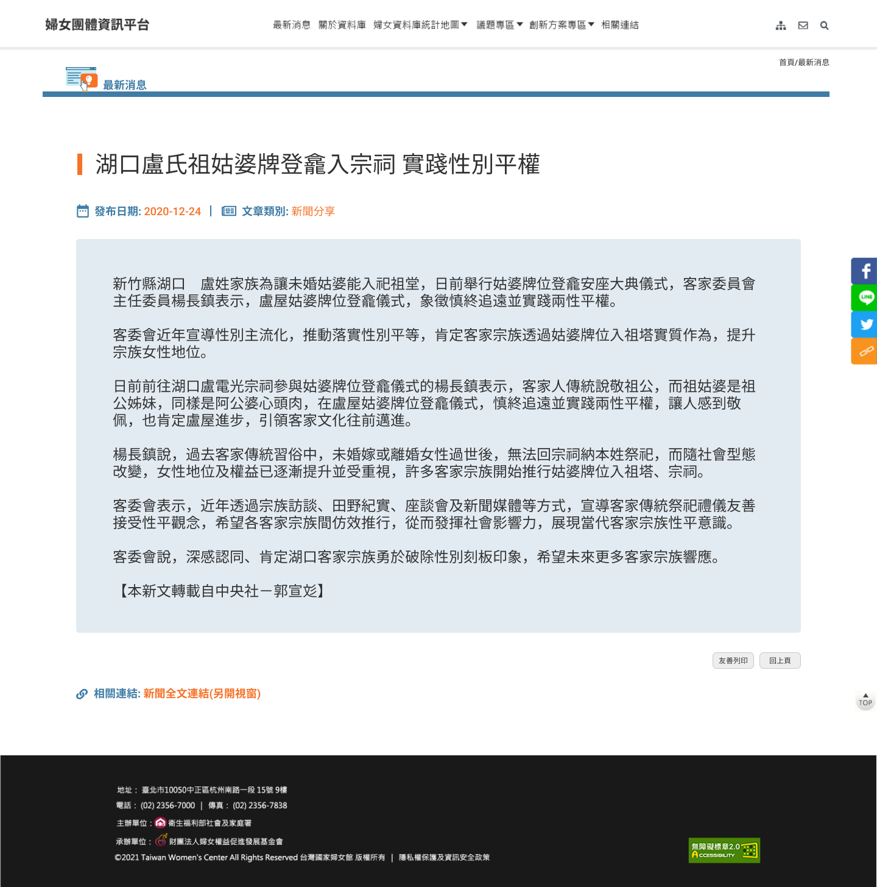
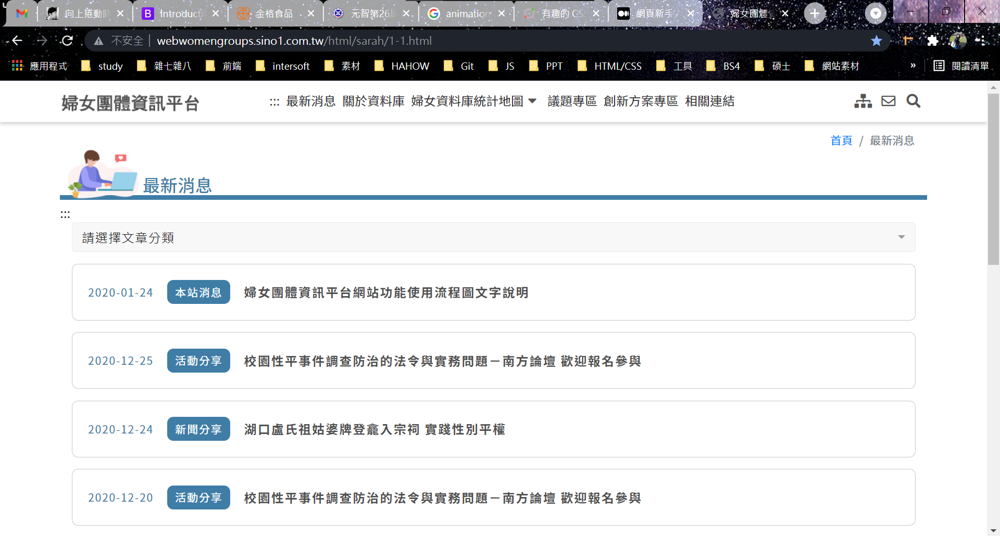
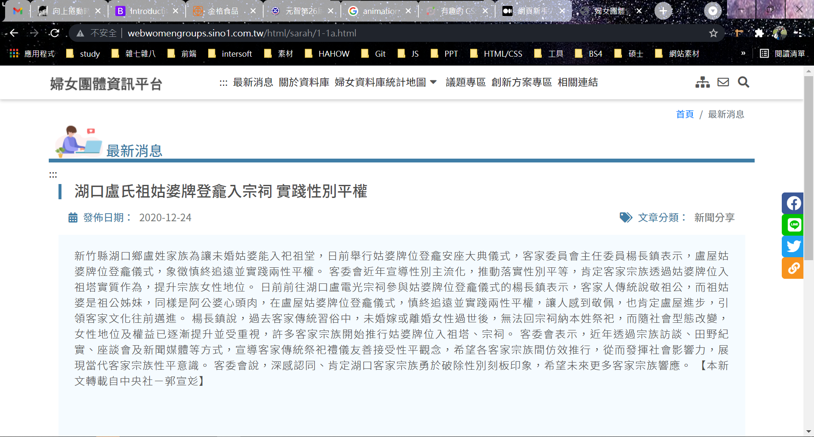

此學期於實習時間為每星期的一、二、三，上班時間為早上9點到下午6點，主要負責網站前端的設計及撰寫。
前端為「將資料呈現給使用者的部分」，前端的呈現會直接影響使用者的體驗，需要思考如何設計才能提升使用者體驗。舉例來說，假設網站是一間餐廳，前端就是餐廳的櫃檯，直接面對使用者對網站的操作。而後端則是廚房，接收前端的要求並提供相對應的資料，接受傳來的客戶需求，提供餐點。
(1) 網頁視覺設計
網頁設計師的工作是規劃網站的版面，使文字、圖片與如何能正常的讓在網站的畫面合理的顯示在電腦與手機上，為開始寫程式前的準備，避免到時需要邊寫邊修改，還可以先與客戶確認是否符合需求，增加不必要的負擔及工時。
(2) 網頁切版
將完成的靜態設計稿，撰寫程式讓它在網頁中實際呈現出來。
二、 實習期間完成的進度
1. 芥菜視覺設計
此客戶的官網需要改版原因為網站的版型過舊，導致主題不明確、設計感不足，資訊雖然豐富但雜亂，難以閱讀，無法符合現在使用者使用習慣等。
客戶的需求:
1. 官網架構以品牌及捐款為目標導向
2. 引導式內容吸引感性及理性民眾
3. 增加互動功能與民眾增加互動
結合以上客戶需求，我的設計理念為:
區塊編排順序是以引導式內容為基準，由淺入深，在Banner 留下第一印象後，在慢慢藉由故事及實際數據讓使用者了解組織並獲得信任感，引發捐款的動機。
人的眼睛擅長集中觀看單一事物，比起大量物件四處分散的版面，整理清晰的版面比較容易觀看。 因此採用一個區塊一個主題的滾動式網頁的方式，滾動式讓網 頁設計可以無縫延續下去。跟點擊式的做比較，經驗上來說點擊不但會增加下載的時間，滾動式行動裝置上也更加直覺。
在色彩上採用明亮大方的⾊彩為主⾊系，營造和諧視覺效果，給人充滿舒適愉快的視覺感受。⽂字使用白⾊或較灰的黑⾊，畫面舒適、不死板。
下圖為芥菜官網設計稿:



2. 婦權會視覺設計
此客戶希望不要有性別刻板印象，例如粉色及女性穿著裙子的插圖，希望網站呈現中性的風格，並且客戶主要重點為資訊。
結合以上客戶需求，我的設計理念為:
藉由鮮明的色彩及插圖構成，風格明亮活潑，在滾動時加入動畫特效，引導使用者往下瀏覽網站。
類似於一頁滾動式網站，在使用者點擊導覽列後，畫面滾動到指定位置，而非跳轉到其他網頁。相較於滾動，點擊不但會增加下載的時間，滾動在行動裝置上也更加直覺。
色彩上採用明亮活潑的色彩為主色系，營造和諧視覺效果，給人充滿活力及愉快的視覺感受。為了避免在彩度較高的畫面中不易閱讀。⽂字使用白色或較灰的黑色，畫面舒適、不死板。
下圖為婦權會首頁設計稿:



下圖為婦權會文字列表頁:

下圖為婦權會單一內容頁:

3. 婦權會內頁html切版
先由正職同事負責主要架構，完成首頁及重要功能，我則分配到列表頁及內頁的部分。
下圖為文字列表頁html切版:

下圖為單一內容頁html切版:
